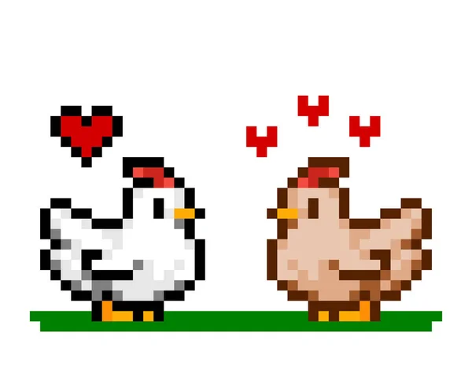

Міні-гра: Перевір себе!
Що було першим: курка чи яйце? (Натисни, щоб побачити відповідь)
Якщо питання розглядати з позиції еволюційної біології, відповідь проста: першим було яйце.
Яйця існували мільйони років до появи курей, а сама перша курка, якщо визначати її як окремий вид, також мала з’явитися в яйці. Давній парадокс виникає лише тоді, коли ми уявляємо появу курки та яйця як дві окремі події без тривалої еволюційної історії між ними.
Насправді природа не працює за принципом «до» і «після» для двох чітко відокремлених видів. Нові види формуються поступово, покоління за поколінням, тому перша курка стала результатом процесу, який почався задовго до появи самої курки.
Дивовижні факти про курей

- Прямі нащадки динозаврів: Кури є найближчими з нині живих родичів знаменитого Tyrannosaurus Rex.
- Розумніші, ніж здаються: Вони здатні впізнавати понад 100 різних облич (як людей, так і інших тварин).
- Власна мова: Кури використовують більше 30 різних звукових сигналів для спілкування між собою.
- Сни та фаза швидкого сну: Курям, як і ссавцям, сняться кольорові сни під час сну.
Географія та поширення
Кури живуть на всіх континентах Землі, окрім Антарктиди.
Загальна популяція курей у світі перевищує 33 мільярди особин, що робить їх найчисельнішим птахом на нашій планеті (на одну людину припадає більше ніж 4 курки!).